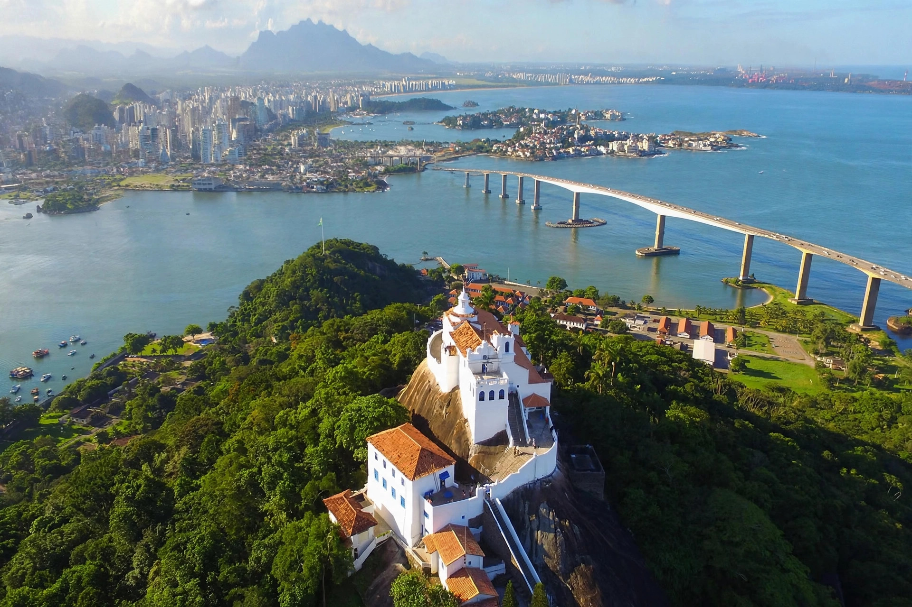

Vitória, Espírito Santo
Vitória is the capital of the Brazilian state of Espírito Santo. It stands on an island in the Atlantic Ocean, connected to the mainland and to neighbouring cities by bridges, and forms the centre of a metropolitan area that also includes Vila Velha, Serra, Cariacica and Viana. It is known for its beaches, its port complex and its role as an export centre for iron ore and other goods.
| Country | Brazil |
|---|---|
| State | Espírito Santo |
| Founded | 8 September 1551 |
| Population | about 360,000 (city); about 2 million (metro) |
| Time zone | UTC−3 |

History
The island was settled by the Portuguese in the 16th century after earlier attempts on the mainland met resistance from Indigenous peoples. Vitória was founded in 1551 and grew as a defensive port settlement. Development accelerated in the 20th century with the expansion of the Port of Vitória and the nearby Tubarão port complex, built for iron-ore exports.
Geography and climate
Vitória occupies an island at the mouth of several rivers, with hills rising behind the city. Its climate is tropical, warm and humid for much of the year, moderated by sea breezes. Camburi Beach is its best-known urban beach.
Economy
The economy rests on port services, steel and mining logistics, oil and gas support, commerce and public administration as a state capital. Vale and other companies operate major export terminals in the region.
Transport
The Terceira Ponte (Third Bridge) links Vitória to Vila Velha. Eurico de Aguiar Salles Airport serves the city, and federal highways connect it to Belo Horizonte, Rio de Janeiro and Salvador.